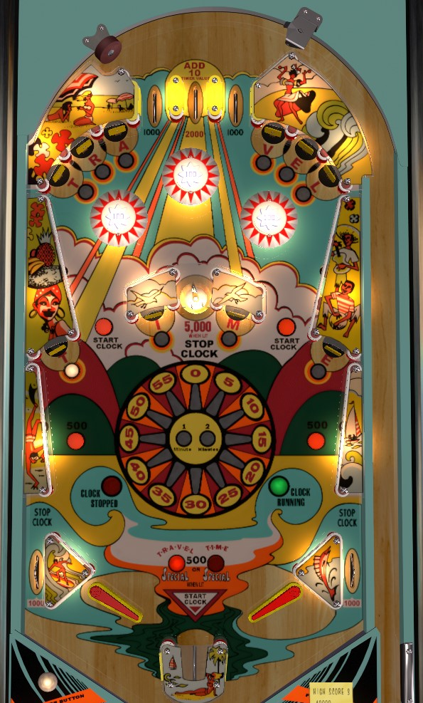

Travel Time is the replay version. Summer Time is the very rare novelty play only version that does not give replays for reaching certain scores.
Travel Time is a timed game, with unlimited balls as long as there is time on the clock. The game starts with between 45 and 90 seconds. Plunging the center top lane gives 10 seconds; completing the Travel or Time standup targets lights the kicker between the flippers for 5,000 points and 25 seconds of time. Out lanes, the drain, and center saucer stop the clock; the center kicker, top lanes, and rollover buttons start the clock. If the kicker does not reliable but the ball in the center saucer, a viable strategy may be to repeatedly plunge the center top lane and intentionally drain.
The game of Travel Time starts with either 45, 60, 75, or 90 seconds on the timer in the center of the playfield. Various features cause the timer to start or stop. As long as there is time on the clock, you will be given a new ball to shoot once the current one drains, but as soon as the ball drains with no time remaining, the game is over. Up to 175 seconds can be stored on the clock.
The top lanes, rollover buttons on the sides of the table, and center kicker between the flippers start the clock. The out lanes, drain trough, and center saucer stop the clock. Note that this means the clock stops sooner if you drain down an out lane, compared to a "center" drain that goes under the flippers and avoids the center kicker.
Hit a standup target to light it. Lighting all 6 Travel targets or all 4 Time targets lights the kicker between the flippers for 5,000 points and an additional 25 seconds. The A and V targets out of the Travel banks at the top of the playfield can be tied together, so that hitting either one gives credit for both. If both Travel and Time are completed, the center kicker will be lit twice, scoring a total of 10,000 points and 50 additional seconds. Collecting the additional time from the center kicker will unlight the completed Travel or Time set, allowing them to be completed again for more time.
The center top lane scores 2,000 points and 10 seconds. Plunging this lane every time you get a chance to shoot the ball is absolutely paramount.
The center top lane scores 2,000 points; the other two score 1,000 points.
All standup targets score 1,000 points.
All bumpers score 100 points.
The kicker between the flippers scores 500 points if not lit at all; 5,000 points if either Travel or Time has been completed; or 10,000 points if both Travel and Time are completed.
The center saucer scores 500 points, or is lit for 5,000 points if there is currently no time remaining on the clock.
Out lanes score 1,000 points.
There are no in lanes, Flippers back up directly to the slingshots. Flippers are much farther apart than on most games, allowing room for the center kicker between the flippers. There is just barely room for a pinball to drain between a flipper and the edge of the center kicker; most "center" drains come from flippers raised at inopportune times. Especially if the center kicker reliably throws the ball into the saucer, which stops the clock, it may be safe to simply let a ball go from the flipper area into the kicker to regain control.